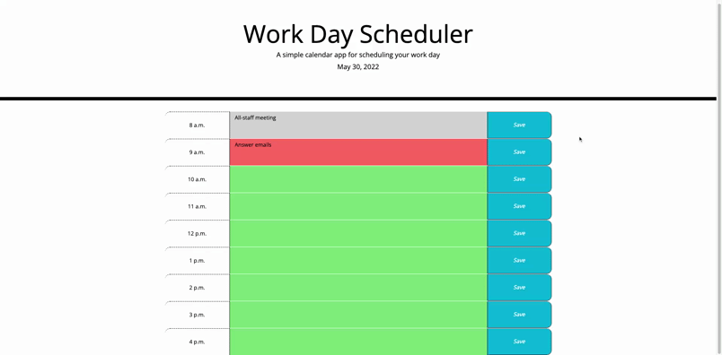

About Me
I graduated from North Central University in 2015 with a degree in media communications. I worked in that field for five years before I decided that I didn't enjoy my job responsibilities anymore. In the summer of 2020, I started to teach myself the basics of HTML and CSS. These coding languages were helpful for me because I was working in email and digital marketing. Aside from being helpful for the job I had at the time, I discovered that I loved working with HTML and CSS.
It took me about a year and a half to make the decision to enroll in a coding bootcamp. When I was working by myself on learning how to code, I often got stuck and didn't know to work through the problems I was having. I'm excited to be in the coding bootcamp now because of the support that comes with the program.
In what I've learned so far about web development, I enjoy the fact that coding languages have rules, yet you can be creative with your projects. I know there is a lot I don't know, yet, but I'm excited to learn!

My Work
Work Day Scheduler (HTML, CSS, JavaScript, API)
MARVEL-ous Writing Prompt (HTML, CSS, JavaScript, API)